생성형 AI × 지식그래프 활용
1
KG 기반 연관성 분류
일일
Haiku
💡 KG 프롬프트 주입
온톨로지 노드 목록
을 프롬프트에 주입하여 기사가 어떤 KG 엔티티와 관련되는지 판별
8개 도메인 분류체계
와 카테고리 정의를 프롬프트에 제공
위기 클러스터 목록
을 주입하여 클러스터 자동 배정
수집된 뉴스 기사 각각에 대해 LLM이 KG 온톨로지를 참조하여
4단계 연관성
을 판별합니다.
① 공급망 연관 여부 → ② 도메인 분류 → ③ KG 엔티티 매칭 → ④ 위기 클러스터 배정
High
Medium
Low
None
2
일일 브리핑 생성
일일
Sonnet
💡 KG 프롬프트 주입
KG 전파경로
(인과 관계)를 주입하여 사건의 한국 영향을 서술
산업별 의존도·투입계수
등 정량 속성을 참조하여 영향도 분석
6개 섹션 구조
와 작성 가이드라인을 프롬프트로 제공
분류된 기사들을 LLM이 KG 전파경로를 참조하여
구조화된 브리핑
으로 합성합니다.
카테고리별
핵심 동향 서술
+ KG 엔티티 기반
한국 영향 분석
+ 관련 기사 인용을 포함한 일일 보고서를 생성합니다.
3
기사별 위기등급 판정
주간
Sonnet
💡 KG 프롬프트 주입
KG 영향 매트릭스
(전파경로 + 정량 속성)를 주입하여 위기 심각도 평가
위기등급 판정 기준
과 각 등급 정의를 프롬프트에 포함
한국
산업·물자 의존도
를 참조하여 파급 범위 정량 분석
일주일간 분류된 기사 각각에 대해 LLM이 KG 영향 매트릭스를 참조하여
위기 심각도
를 평가합니다.
기사가 다루는 사건의
한국 영향도 · 파급 범위 · 시급성
을 종합 분석하여 4단계 등급을 부여합니다.
Crisis
Warning
Caution
Normal
4
주간 모니터링 리포트 생성
주간
Sonnet
💡 KG 프롬프트 주입
KG 정량 속성
(의존도, 투입계수, 전파 가중치)를 주입하여 종합 위기등급 판정
산업별 전파경로
를 참조하여 시나리오 생성 시 근거 제시
위기등급 Tier 1~5
판정 기준과 이전 주차 등급을 컨텍스트로 제공
기사별 평가 결과를 종합하여 LLM이
해당 주의 위기등급(Tier 1~5)
을 판정하고
주간 시나리오
를 생성합니다.
KG 기반
산업별 전파 분석
(단기·중기·장기) +
정책 시사점
을 포함한 구조화된 리포트를 생성합니다.
Haiku
대량 분류
— 비용 효율적 고속 처리
Sonnet
분석 · 생성
— 고품질 추론 · 구조화된 작문
KG
모든 LLM 호출에
온톨로지 KG가 프롬프트로 주입
→ 도메인 지식 기반 환각 방지

한국해양수산개발원